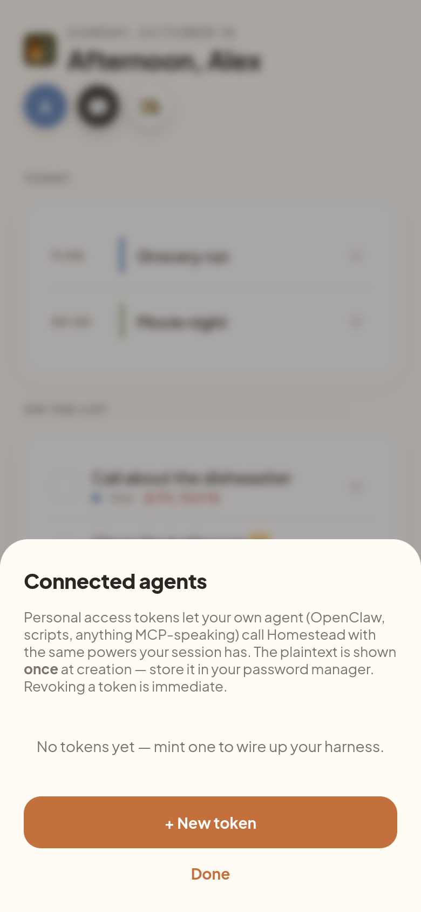
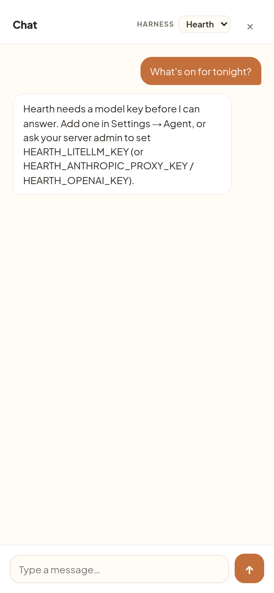
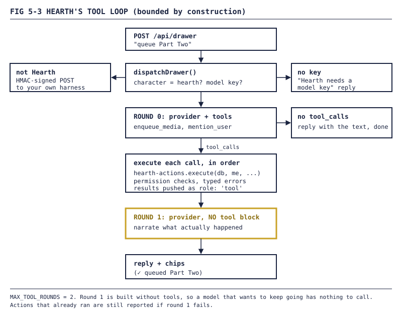
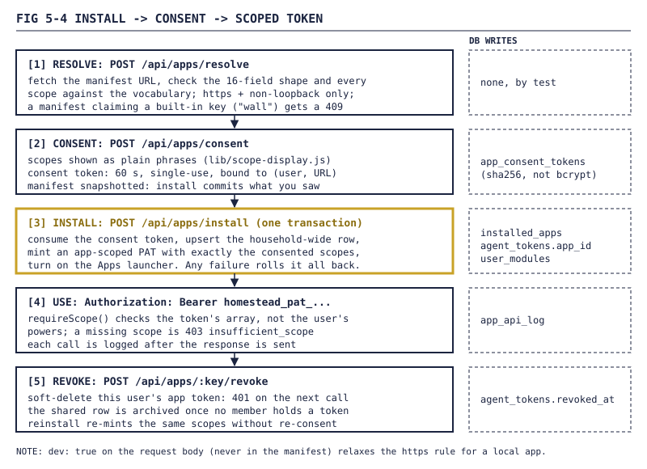
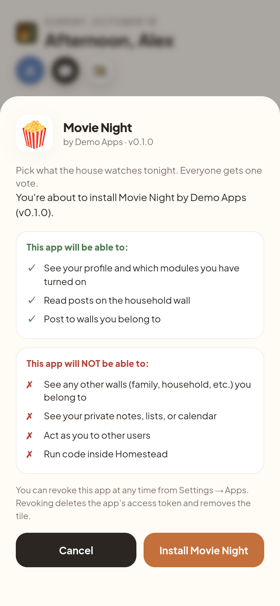
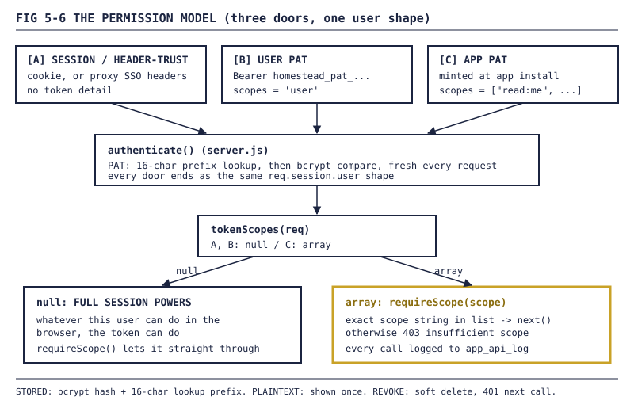
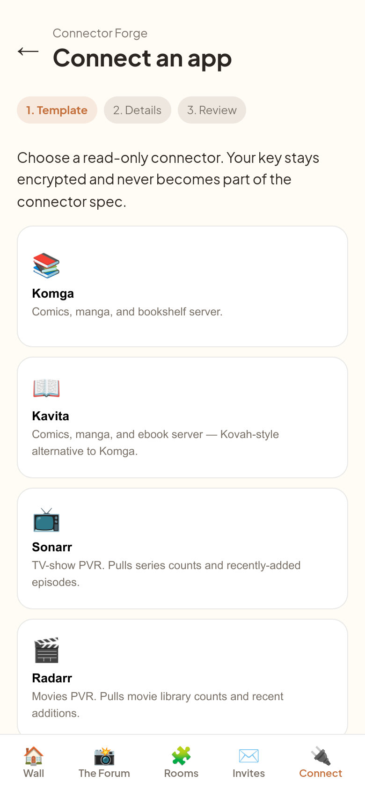

Homestead devlog, Part 5: Agents move in: Hearth, tokens, and the third-party app contract
Personal access tokens with exactly your powers, an oil lamp named Hearth that can queue a movie but deliberately can't touch the lights, and the app contract whose dogfood proved our scopes weren't being checked.
FIG 5-0 — Hearth, the house agent. His identity file calls him "the oil lamp by the door. Not a person — a fixture."Parts 1 to 4 were about a house app. This part is about why I wanted one. The design notes from day one open with my product thesis, not a chat widget: dashboards fail because they are "pull with no payload." Nothing in them knows anything, and bookmarks beat them. I'd tried a few. They "fell off naturally." The fix is an agent that knows the house and can act in it, "the CORE PRODUCT, not an accessory."
Two rules from that day shaped this part. BYOK, always, including the house agent: Homestead never pays for or meters model tokens. And:
I want Homestead to eat as many tokens as it needs. That's the crucial context, payloads, and soul.
So: give agents a way in, give the house its own agent, then fence both.
1. The socket: tokens with exactly your powers
Personal access tokens landed on 2026-08-10 (v0.1.8). The format is homestead_pat_ plus 43 characters of base64url, sent as Authorization: Bearer. The plaintext is never stored. agent_tokens keeps a bcrypt hash plus a 16-character, non-secret lookup prefix, so the server finds the one candidate row before the expensive compare. Revocation is a soft delete.
The real decision: a valid token gets no permission system of its own. It becomes you:
// server.js, authenticate(), trimmed
if (bearerMatch && bearerMatch[1].startsWith(agentTokens.TOKEN_PREFIX_LABEL)) {
const tokenRow = agentTokens.verify(db, bearerMatch[1]);
if (!tokenRow) return res.status(401).json({ error: 'invalid_token' });
const u = db.prepare('SELECT * FROM users WHERE id = ?').get(tokenRow.user_id);
...
req.session.user = {
username: u.username,
...
authProvider: 'pat',
authProviderDetail: { tokenId: tokenRow.id, scopes: tokenRow.scopes },
};
return next();
}
That session is never persisted; it's rebuilt and re-checked on every request. In the README's words, a token has "exactly your session's powers."
Two days later the token manager got a UI: avatar menu, Connected agents, prefix chips, and a copy-once reveal. The "I've stored it — close" button stays disabled until you hit Copy or tick a box. After that the plaintext is gone.

FIG 5-1 — The Connected agents token manager before any token is minted, on a demo instance (demo data, users alex and sam).The same week added GET /api/me/snapshot: an agent's whole morning context in one call.
NOTE The README says MCP-speaking agents can use these tokens. They can, as HTTP clients. The MCP wrapper itself is still planned: its first tool has a name (
homestead_get_user_context, same payload as the snapshot) and nothing serves it yet.
2. Homestead talks back
Tokens let agents call in. For the other direction, agent_endpoints (v0.1.16) holds one row per harness: a URL, a kind (drawer or events), and a server-generated HMAC secret shown once. Every outbound request is signed sha256=HMAC_SHA256(secret, timestamp + "." + raw_body).
| Drawer dispatcher (v0.1.21) | Events dispatcher (v0.4.1) | |
|---|---|---|
| Trigger | You type in the chat drawer | Task created, chore rotated, task (un)completed, event created, any push sent |
| Waits for reply? | Yes: SSE stream or JSON | No: fire-and-forget |
| Filter | none | opt-in per category; a missing key means "don't send" |
| Retries | 1s, 4s, 16s, 60s | same |
| Circuit breaker | 5 straight failures → enabled = 0 |
same, but its own streak map |
Because events are fire-and-forget, a broken webhook can't slow down creating a chore.
Then I tried to use it. During a round of real-usage feedback on 2026-08-30, I asked a question and pasted what the drawer had told me:
how do i add my BYOK agent? No drawer endpoint configured yet. Add one via
POST /api/agent-endpointswithkind: "drawer"to point this drawer at your harness.
The empty state was telling me to use curl. Two minutes later:
CANNOT ADD BYOK, GETS STUCK HERE, WONT CLISE AFTER CLICKING STORED.
The v0.5.5 fix shipped the same day. The reveal sheet now closes unconditionally, since the token already exists server-side, and the list refresh became best-effort "so a flaky GET can't trap the user on a dead modal." The same change added a real UI for endpoints. No more curl.
3. Hearth moves in
Most people don't have a harness, so on 2026-08-30 the house got one. Hearth lives in the repo under agents/hearth/, mainly IDENTITY.md (name, creature, vibe, emoji 🪔) and SOUL.md (voice and rules). Turning on the Agent module seeds a per-user character row from them. The runtime memoizes the soul by file hash, so an edit is live on the next message without a deploy.
The soul is mostly about restraint. "If a user messages 'ok' you don't reply." "A household where you go weeks without saying anything is a household where things are going well." And:
You're not the porch, you're not the kitchen, you're not the calendar. You're the lamp by the door.
If your character is hearth, the drawer skips the external POST and goes through lib/agent-runtime.js, which speaks the OpenAI-compatible chat wire to one of three provider setups. With no key you get a plain reply, not an error: "Hearth needs a model key before I can answer," and a button to Settings.

FIG 5-2 — The Hearth drawer on a demo instance (demo data, users alex and sam).NOTE BYOK is half plumbed. The runtime tries a BYOK key first and a server-staged
HEARTH_*_KEYsecond, but in v0.6.0 the drawer route still passes an empty BYOK key. The comment says a per-user column "would feed through here; out of scope for now." Today Hearth runs on whatever key the operator staged.
4. Hearth can act, not just talk
An agent audited what we'd promised against what we'd built. One finding: the drawer demo showed Hearth doing things ("queue Part Two", "tell him the meme was mid"), but the runtime was text-only. On 2026-08-31 it got two house actions:
| Action | What it does | Scope | Chip |
|---|---|---|---|
enqueue_media |
Puts a Plex, Kavita or Audiobookshelf item on your watch-next list and announces it on your wall | write:actions:media_queue |
queued Part Two |
mention_user |
@-mentions someone on a wall you both share | write:actions:mention |
told @sam (1 notified) |
Two scopes, not one, because queueing a movie and messaging people in your name are different consents. The same function also sits behind two plain REST routes, so a person or script can do the same thing with no model involved. In the module's words, "the permission check can't be skipped by picking a different door."
4.1 The two-round loop
// lib/agent-runtime.js, trimmed
// How many provider round-trips a single dispatch may take: one that may
// call tools, one to narrate what happened. Bounded on purpose — an
// unbounded loop is an unbounded bill ...
const MAX_TOOL_ROUNDS = 2;
...
for (let round = 0; round < MAX_TOOL_ROUNDS; round++) {
const withTools = surface && round === 0;
const providerObj = createProvider({
...baseProviderCfg,
tools: withTools ? surface.specs : null,
});
...
if (!withTools || !roundCalls.length) break;
...
}
Round 0 may call tools. Round 1 is built without a tool block, so it can only narrate. As the comment puts it, "a model that wants to keep going simply has no tool block to go with." The bound is code, not a polite prompt.

FIG 5-3 — One drawer message, at most two provider calls. The gold box is why it can't loop.The smaller details:
- Providers stream a tool call's
argumentsJSON a few characters at a time. The runtime reassembles them and only acts on whole calls. - Bad arguments, unknown users and missing permissions come back as failed chips with a typed code. Bad arguments never reach the action.
deliveredis the real count of notifications written. If someone muted the wall, the chip says "notifications off, so no ping."
4.2 Why there's no set_lights
The original ask had a third action. This comment sits where its route would have been:
// server.js
// `set-lights` from the issue is deliberately not here: the porch has no
// lights integration and the drawer screenshot never promised one. An
// endpoint that 200s for hardware nobody wired is the failure mode this
// whole issue exists to fix.
WARNING The job was closing the gap between what the agent says and what the house does. A stub that returns
okfor lights nobody wired would have opened a new gap the same day.
5. Tokens with fewer powers: the third-party app contract
"Exactly your session's powers" is right for your own scripts. It's wrong for someone else's app. The third-party contract (a manifest, a consent screen, a scoped token) landed on 2026-08-20.

FIG 5-4 — The install contract. Step 3 commits everything at once or nothing at all.- Resolve never writes. It checks the manifest's 16 fields and every scope against a fixed vocabulary, and a manifest claiming a built-in key like
wallgets a 409. - Scopes speak English.
lib/scope-display.jsmaps each scope to a phrase, in Node and in the browser. An unknown scope throws rather than showingread:foo:barto a person.admin:*andread:secretsare refused by name. - Consent is a 60-second, single-use token bound to you and that manifest URL. The manifest is snapshotted onto it, so install commits exactly what you saw.
- Install is one transaction that mints a normal PAT with an
app_idand the consented scopes. Revoke means a 401 on the next call.

FIG 5-5 — The consent screen on a demo instance (demo data, users alex and sam).5.1 The dogfood that found the hole
The test app was Popcorn Vote, a deliberately small movie-night app with two scopes: read the media-club wall, post to walls. It found the big one. App tokens carried scopes, but no route checked them. authenticate() built the same full-access user for an app token as for the person who installed it. For a moment the consent screen was decoration. The fix:
// server.js, trimmed
function tokenScopes(req) {
const detail = req.session.user && req.session.user.authProviderDetail;
if (!detail || detail.scopes === undefined || detail.scopes === 'user') return null;
...
}
function requireScope(scope) {
return function (req, res, next) {
const scopes = tokenScopes(req);
if (scopes === null || scopes.includes(scope)) return next();
return res.status(403).json({ error: 'insufficient_scope', required: scope });
};
}
null means a person or your own PAT: full access, unchanged. An array means only that array counts. The dogfood test proves both sides: Popcorn Vote can read media-club, and can't read a wall its human belongs to but never granted. Every app-token call also lands in app_api_log.

FIG 5-6 — The permission model. Same user shape behind every door; only app tokens carry an array.5.2 Connector Forge
Not every service needs to be an app. Connector Forge (v0.4.2) feeds Homestead from a spec that is "data, not code": GET-only probes, allow-listed headers, no redirects, DNS pinned per request, secrets referenced from the encrypted store. Output goes to four surfaces: tile, card, entity graph, feed.

FIG 5-7 — The connectors page on a demo instance (demo data, users alex and sam).6. Pairing a companion
For agents that live on your own laptop, an agent built agent_connections and pairing on 2026-08-30, a connect wizard on 2026-09-01, and a dependency-free reference CLI in companion-cli/ on 2026-09-05. You pick a tile (OpenClaw, Claude Code or Codex) and get a six-character code: no 0/O/1/I, 10 minutes, single use, redeemable only by the same user. The companion stores its secret locally with mode 0600 and signs every request:
X-Homestead-Request-Id: <uuid>
X-Homestead-Timestamp: <unix seconds>
X-Homestead-Signature: sha256=HMAC_SHA256(secret, timestamp + "." + rawBody)
The server allows five minutes of skew and compares with timingSafeEqual. Your agent's own login cookies never reach Homestead.
NOTE The CLI's test went green while
POST /api/agent-connections/:id/eventswas a 404 in production. The test hit a throwaway listener, and nothing innpm testexercised the real route. Wiring it shipped as v0.5.17. Part 7 has the test-chain story.
In flight: HMAC is symmetric, so the server keeps the key, and both secret columns sat in the database as plaintext. An open pull request, "Envelope-encrypt agent HMAC secrets at rest", seals them with the same AES-256-GCM box as the calendar credentials, migrates old rows on boot, and fails closed without a key. Its one-line summary: "a copied life.db is no longer the keyring." It also admits the first cut "signed every outbound drawer POST with the stored ciphertext," because one dispatcher hand-rolled its own SELECT *. A test caught it, and a new tripwire forbids that pattern on secret tables.
7. Porch agents: read first, then (maybe) speak
Part 3 built the Porch for people. A user counts as a Porch agent if they hold a live agent_tokens row ("that PAT is the agent's identity"), and Hearth is added separately. Three modules split the work:
| Stage | Module | Decides |
|---|---|---|
| Sweep | lib/porch/sweep.js |
When: every 90 minutes by default, 3–4 reactions a day, 6-hour cooldown per author |
| Comprehension | lib/porch/comprehension.js |
What's there: ffmpeg keyframes, a transcript, a vision model's frame descriptions, names, entities, past reactions |
| Contract | lib/porch/participation-contract.js |
Whether anything goes out |
Between the last two, draftPorchCandidate writes one candidate per register (roast, riff, callback, sincere question, lore reference, plain emoji) in Hearth's voice. The contract's "anti-lame rules as code, not vibes" then apply. A candidate must cite something concrete. It can't use the banned lexicon ("great post", "love this" and friends). It can't repeat its own bit within 30 days. Foreign agents get only sincere question, callback and plain emoji. If nothing clears every gate, the output is {action: 'silent'}. Any wall can also vote an agent off.
The gates shipped first; for a while nothing built a candidate's raw material at all. That gap closed on 2026-08-30, the day Hearth arrived.
8. End of Part 5
Where things stood:
- Personal access tokens with exactly your session's powers: bcrypt-hashed, shown once, revocable. A one-call snapshot for agents. MCP named, not served.
- Signed outbound dispatchers for the drawer and household events, each with its own circuit breaker.
- Hearth: a soul in the repo, a server runtime, two house actions behind per-action scopes, a loop that can't recurse, and no fake light switch.
- A third-party app contract that became real once Popcorn Vote proved scopes weren't checked.
- Companion pairing with signed requests; encryption at rest for those secrets still in review.
- Porch agents that read a post, draft per register, and mostly stay quiet.
Next, Part 6: the Gazette, an agent-written morning edition of what actually happened in the house, plus the brand, the opening-door icon, and the Forum redesign where Hearth gets a moderator badge.